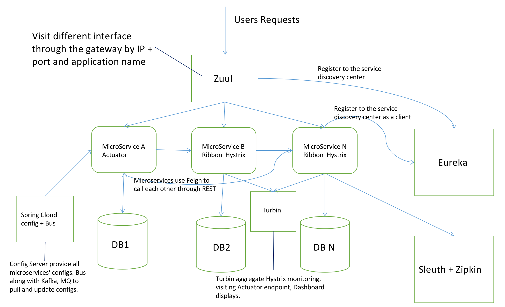

Spring Cloud is one of the most popular Microservice Framework, can help us implement Microservice Architecture more easily.
Foreword
Spring Cloud is one of the most popular Microservice Framework, can help us implement Microservice Architecture more easily. In the following picture, we can see how the component in Spring Cloud worked with each other.

Component
Let’s see how these Frameworks worked.
Feign
Microservices communicate with a REST interface, Feign can support REST visit elegantly, just like you are visiting interface in the same process.
Eureka
A large web application is usually split into many micro applications or services, then we need to save the information of all these services, and let them know each other, so we use Eureka as a registered center. Every application register their information(IP, port, Service name, etc.) when they are started up, Eureka saves this information, when applications need to call each other, they can find info from Eureka by service name and then communicate. Service discovery makes it easier for microservices to communicate with each other.
Ribbon
One service may deploy multiple instances for service reliability, and Ribbon supports a balanced way. Ribbon provides several load balancing algorithms, and we can customize the algorithm too. Ribbon can obtain the address of the service from Eureka Server automatically, and visit one of the service’s instance based on load balancing.
Hystrix
The consumer will wait until timeout when the response of the provider is slow. In high load sceneries, this kind of problem can lead to resource exhaustion or even the collapse of the entire system, Hystrix can solve this problem. Hystrix is a latency and fault tolerance library designed to isolate points of access to remote systems, services, and 3rd party libraries, stop cascading failure and enable resilience in complex distributed systems where failure is inevitable. Hystrix implements latency and fault tolerance with the following points.
1. Wrap request
Wrap the dependency call logic with HystrixCommand (or HystrixObservableCommand), each command is executed in a separate thread. Used Command pattern here.
2. Circuit breaker
When the mistakes rate of one service beyond a threshold, Hystrix can break it, stop calling this service for a while.
3. Resource isolate
Hystrix maintains a light thread pool for every dependency. The request to this service would be rejected immediately when the thread pool was full, Fail fast and rapid recovery.
4. Monitoring
Hystrix can monitor the service and configuration changes in realtime.
5. Fallback
Hystrix can execute fallback logic when the request is failed, timeout or rejected.
Zuul
Services have a different address, and the client may need to call several interfaces from several services to implement business logic, this will lead to many problems, like increased client complexity, cross-domain, authorization, and refactoring problems.
thefollowing advantages:
1. Easy to monitor
We can gather the monitor data from the gateway and analysis outside.
2. Easy to authenticate
We can authenticate in the gateway without authenticating in every single service.
3. Reduced the interactions between the client and each service
Spring cloud BUS
In Spring Boot, we can put the configuration in application.yml or application.properties. If we need to switch the environment, we can set multiple Profiles. But in a microservice system, the configuration management usually has the following demands:
1. Centralized management configuration
2. Different configuration in Different Environment
3. Dynamic change in Runtime
4. Auto-update when the configuration change
Sleth + Zipkin
Sleth + Zipkin provides a graphical UI to view the latency and dependency of every service.